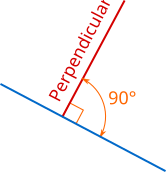
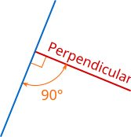
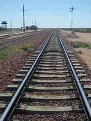
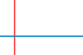
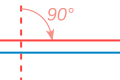
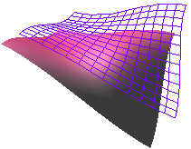

Perpendicular and Parallel
Perpendicular
Perpendicular means at right angles (90°) to.
The red line is perpendicular to the blue line here:

Here also:

(The little box drawn in the corner, means "at right angles", so we didn't really need to also show that it was 90°, but we just wanted to!)
Try for yourself:
Parallel

Lines are parallel if they are always the same distance apart (called "equidistant"), and will never meet. They also point in the same direction.
Just remember:
The red line and blue line are parallel in both these examples:

Example 1

Example 2
Try it yourself:
Perpendicular to Parallel
Question: What is the difference between perpendicular and parallel?
Answer: 90 degrees (a right angle)
That's right, when we rotate a perpendicular line by 90° it becomes parallel (except if it overlaps!)

Perpendicular ...

rotate one line 90°
... Parallel
Likewise, parallel lines become perpendicular when one line is rotated 90°.
Parallel Curves
Curves can also be parallel when they keep the same distance apart (called "equidistant"), like railroad tracks.
The red curve is parallel to the blue curve in both these cases:
Parallel Surfaces
Surfaces can also be parallel, like here:
